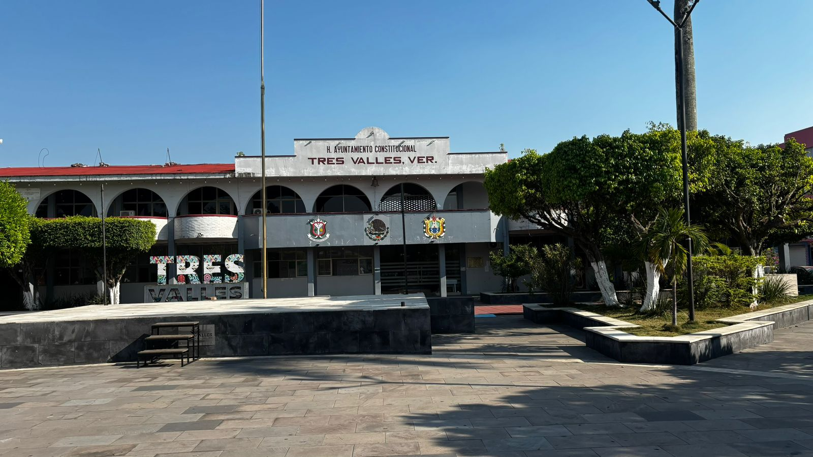
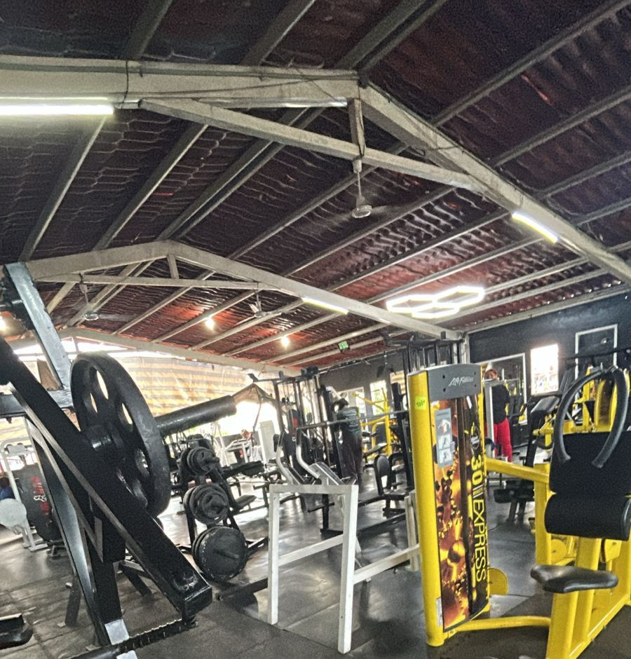
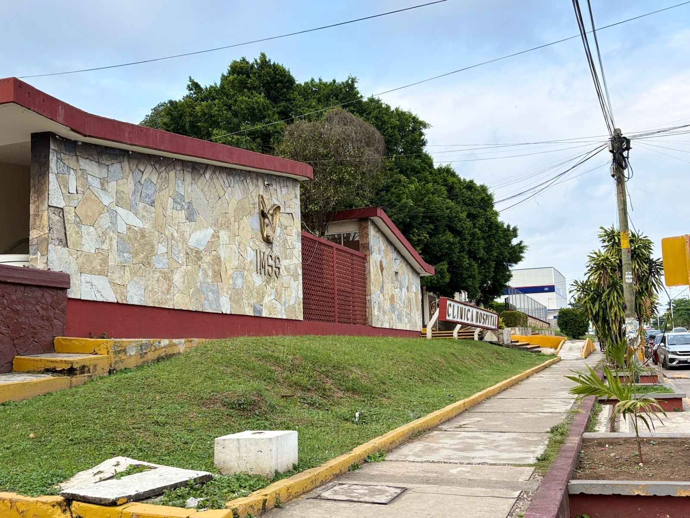

Municipio Tres Valles
En el municipio Tres Valles del estado de Veracruz se encuentra el palacio o mas conocido como el ayuntamiento, se encarga de administrar el municipio: trámites como actas de nacimientos, CURP, pago predial, permisos, servicios público, obras de seguridad y protecciosn civil para las y los tresvallenses y se encuentra ubicado en AV. Benito Juárez S/N, Centro Tres Valle, Veracruz, Justo frente al parque Miguel Hidalgo

Parque Miguel Hidalgo
Es un punto de reunión familiar donde se realizan diversos eventos culturales o de entretenimiento publico donde regularmente van a distraerse.

Parroquia Cristo Rey
La iglesia es importante para las celebraciones religiosas, misas de XV, boda, bautizos, confirmación, comunion, etc...

Unidad Deportiva Salvador Neme
Espacio donde se practican deportes y actividades recreativas como partidos de futbol, voleibol, basquetbol, entrenamientos para partido, torneos, las finales, tambien cuenta con un espacio para caminar, correr, trotar y el area de juegos infantiles.

Complejo Deportivo
una nueva instalacion hecha por la exalcaldesa Zulema Aguilar García modernas para eventos deportivos, partidos de futbol, voleibol, basquetbol y también cuenta con el area de juegos infantiles y para el running.
Casa de Cultura
Lugar donde se promueven actividades artísticas como la danza, el ballet, la pintura, cuenta con taller de manualidades, de pintura, de tocar instrumentos y mucho mas ya que tambien hay un domo para diveros usos multiples .

Gimnasio
Espacio para el ejercicio el gym evolution ya cuenta con aparatos de primera, limpios, con las membresias de visita, la semana y el mes tambien tiene un espacio seguro y vista desde el balcon.

Parque Recreativo
Otro parque donde las familias pueden convivir, el parque las iguana es otro parque que realizo la ex alcaldeza Zulema Aguilar García antes llamado parque "el aguila" donde igual forma tiene asientos, buena vista y juegos para entretener a los niños.

IMSS
Un seguro donde las familias pueden venir a consultas medicas ya que cuenta con servicios básicos, medicamentos, citas de urgencias y es un seguro fundamental para la salud de las y los ciudadanos de Tres Valles.

Video
Si quedo alguna duda puedes observa este video sobre Tres Valles: